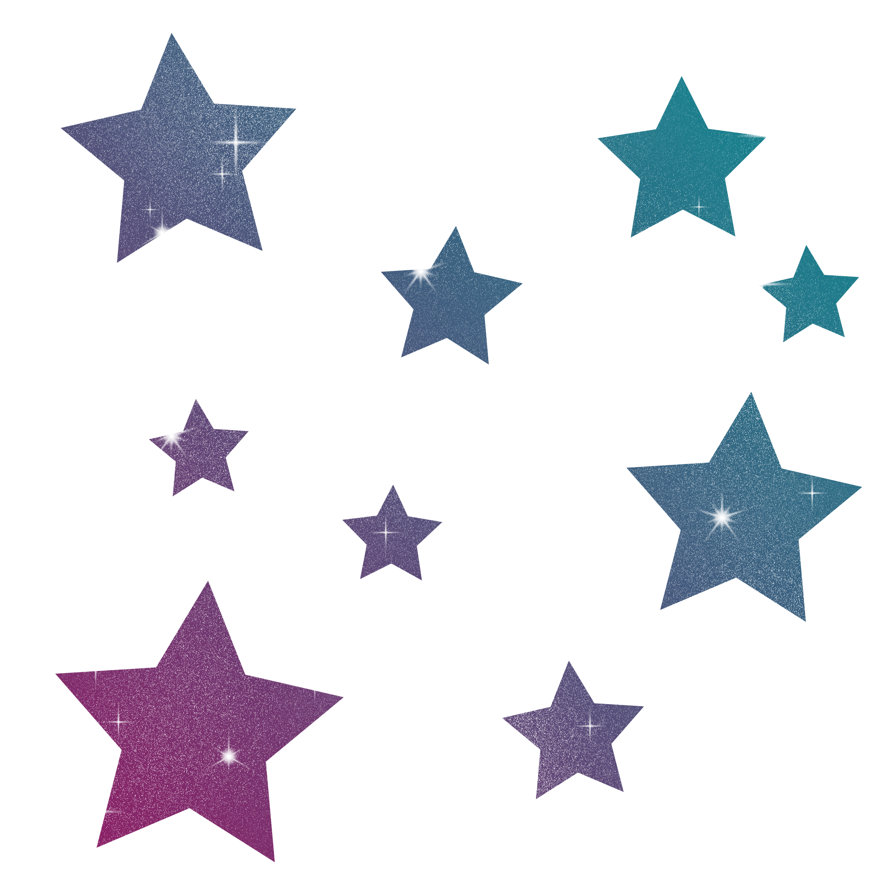

My CSIT 121 Labs
Please click the stars to go to the corresponding lab page.
Cat icon, top left, will take you elsewhere.
Lab 1

Lab 1 was an introductory project to help us begin web development by focusing on basic HTML. Our main
task was to create a personal webpage that showcased different aspects of ourselves, including our skills,
hobbies, and education. This project was enjoyable and refreshing because it let us practice coding hands-on.
Without complex rules or frameworks, we could focus on the basics of HTML, such as creating headings, paragraphs,
and sections. This experience was satisfying and set the pace for our future projects, and allowed us to
express ourselves through a simple online introduction.

Lab 2
Lab 2 focuses on getting started with web standards and HTML through hands-on practice. In this lab, we practiced
hand-coding HTML in a document. The task was to create a blog page that reflected what we had learned so far.
Admittedly, I saw an opportunity to go above and beyond and tried to make the page look exactly like the original.
However, I moved too quickly and lost sight of the project's purpose, which ultimately affected my grade. I'd
rather ask for forgiveness than permission.
Lab 3

Lab 3 introduced the fundamentals of CSS by adding basic styling to a previous HTML document from Lab 2. This
exercise aimed to help us understand how CSS improves the visual presentation of web content and separates content
from design. I was particularly excited about working with CSS, especially since I had gone a bit overboard with it
in Lab 2. Adding colors and fonts was enjoyable, but my page ended up looking like a chaotic mess.

Lab 4
Lab 4 focused on adding visual elements to websites. In this lab, we created a multipage website that showcases
examples of standard web graphic formats while incorporating CSS for background images and visual aesthetics. It was
an enjoyable experience working with multiple pages and creating an appealing, functional menu for site navigation.
However, my cats ended up being the stars of the show.
Lab 5

In Lab 5, we updated the blog page from Lab 3 to create a responsive design. We implemented a single-column layout
for mobile devices and a multi-column layout for desktops, utilizing flexbox, grid, and media queries. Essentially,
we used CSS to re-style the same HTML page with different CSS files, enabling us to rearrange the menus and change the
fonts and backgrounds. Additionally, we added internal navigation using link anchors, allowing users to jump to specific
blog posts on the page.

Lab 6
In Lab 6, we explored the world of UI/UX, focusing on content organization, navigation, the CRAP principles, and accessibility
considerations through an evaluation of a public website. We were required to select a website for assessment that belonged to a
business, non-profit organization, government agency, or school; websites like Amazon or Reddit were not permitted. After
selecting a suitable website, we analyzed it to determine whether it adhered to the CRAP principles, highlighting its compliance
with these guidelines. I chose a homebrew supply and recipe website because I believe beer is great. This project was beneficial
as it made me more aware of how websites are designed. Now, I pay attention to every site I visit, almost like I'm some kind of
internet snob.
Lab 7

The purpose of Lab 7 was to familiarize us with creating and styling HTML tables and forms. This lab helped us understand how to
structure data in tables and collect user input through forms, while also emphasizing accessibility and usability. I created a tier
list based on my personal opinions of video game heroes and villains, and then designed a form for users to fill out that correlated
with our tier list.

Lab 8
In Lab 8, we revisited Lab 04 and incorporated an interactive navigation menu using HTML, CSS, and JavaScript. This lab built upon Lab
04 but included more content and a JavaScript menu provided by the teacher. I find JavaScript amazing and wish I had studied it earlier in
my life. I added more cats to my project, obviously the right thing to do.
Lab 9

For Lab 9, we completed the XML tutorial on GeekforGeeks.org and submitted an XML file. Although this project was somewhat boring, I
recognize the potential of using XML files; databases are very useful, and the format is easy. Win.

Lab10
In Lab 10, we created a multipage website to educate the class about a web standard of our choosing. There were over 300 options available,
and we had to ensure there was no duplication, so we had to tell everyone what we chose before we started. I chose ActivityPub, only because
I can make a joke about grabbing a virtual beer there ;).